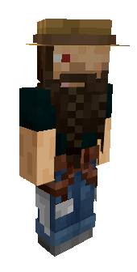

Meet the MadMiners
The members presented on this page are true MadMiners family members.
These people are in for the long run and have all proven loyal and trustworthy.
They engage in discussions on our Discord server and show up for server events.
MadMaddie81 -
Hello everyone!
I'm Maddie and I've been running this server since Feb 2021.
I live in Sweden and have been playing Minecraft since 2019.
I'm mainly a builder but try to expand my Minecraft knowledge and learn more redstone.
I'm getting pretty good at it.
I started making YouTube videos in 2020 and I also stream on Twitch once in awhile.


BogWitchSophie -

Hi folks! My name's Sophie and I'm a MadMiners server moderator.
I've been a long time miner & crafter for about 9 years now. I played Java a little in college. Then swapped to Xbox 360 console when my potato of a PC died. Played that until the "great shift" to Bedrock.
I primarily enjoy Bedrock Minecraft, but do dabble in java hardcore and some java servers as well for research reasons.
LegendStarcraft aka Coop
LegendStarcraft, or Coop, is our resident redstoner.
His home is where his iron farm is.
The first one to be accused when the server crashes or becomes overly laggy.
Sometimes he's even guilty.
Also a quite decent builder.
Has had the thougt of making redstone tutorial videos, but isn't quite sure if the YouTuber life would suit him.
Server bestie and long time base buddy with Nana.
McOoz
ollo..!
mE Mc0oZ... ''chough'' .... I got hooked in 2000 when my kid came running in and said ''i want MINECRAFT!!''
I'm a bit of everything a proverbial jack of all trades and finisher of non.
I live in Darkest England, where the food is bland and weather is meh.
I may from time to time Photo bomb peoples videos with a comical death or just streak passed as they stream.
See you out there.
Nana Senpai
Hello everyone!
My name is Nana and I've been playing Minecraft every once in a while since it came out but I started playing seriously in 2019.
I was born in May/2000 and I live in Saudi Arabia (so Arabic is my first language)
My server/Minecraft bestie is Coop (LegendStarcraft)
When it comes to my style of playing I am a bit of everything. I like building, redstone/auto farms, strip mining, achievment hunting and exploring the over world
I tried speed running the game a couple of times before but didn't really end up "winning"
Damalas75 -
Good Day!
I'm Damalas75, and have been playing with Maddie since 2019.
I live in Canada and I've been playing MC since 1.12 in 2016.
I enjoy building homes and decorating, and making my own mod packs for the heck of it.
I had a YouTube channel for a long time and joined Maddie in making videos as content creators 2020, though now I enjoy it casually.
StoneRegent

Stone prefer to live more simple than the rest of the server members.
He feel no need for fancy houses or complicated farms.
His favourite pastime is to take very fiery naps in the nether. Over and over and over again.
Then once in a while he shows up on his friends' doorsteps and shower them with netherite.
Stone is always up for some adventure and won't turn down a dragon fight.